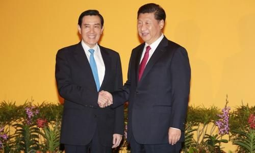

 跨越66年的握手，相信让很多人感慨万千、悲喜交集。习总说：“今天是一个非常特别的日子，两岸领导人见面，翻开了两岸关系历史性的一刻，历史将会记录今天。”马英九也感叹：“穿越66年的时空，伸手相握，握着两岸的过去与未来，也握着中华民族振兴的希望，深具历史意义。” 历史性的会晤，对中华民族影响深远，但千呼万盼始出来，必定有着各种政治博弈和考量。在牛弹琴(微信号：bullpiano)看来，对中国和中国统一而言，至少有五点启示： 1.领导人要自信和有智慧。 坦率地说，两岸峰会迟迟不能举行，主要症结，就在于名分问题。囿于台湾的党派斗争，马英九既没有魄力也没有胆量放弃“总统”的名分。这也是过去多年，身兼国民党主席的他，完全可顺理成章访问大陆，却反而止步不前的根本原因。当然，大陆也是针尖对麦芒，对台湾任何“逾矩”之想保持着高度警惕。要化解这个难题，领导人就需要自信，同时还要有智慧。如这次会谈，既没有习主席，也没有马总统，都是习先生、马先生，就是一种绝佳思路。没有自信、没有智慧，那就永远只能在小格局中打转。 2.领导人还要有责任和担当。 在习马会前的讲话中，习总感慨道：(我们)要对民族担当，要对历史担当。确实如此，《金融时报》就夸赞，这次峰会能够举行，主要就在于习总“敢于担当”。为什么？因为这是对等会晤，马英九已经不是国民党主席，他是对岸的领导人，难免会被解读成“对台湾执政者的合法化”。在这个大陆很长时间不松口的领域，我们突然调整政策，没有一点自信，没有一点担当，不可能这么大胆拍板。只有勇气、责任和担当，才能真正寻找到破解之道。 3.还要有历史的紧迫感。 谈到台湾问题，习总还说过，不能永远地拖下去。但台湾政局走势确实让人心忧，马英九被认为是最后一个中国人“总统”，民进党选情则气势如虹，很可能赢得选举。如果蔡英文是另一个陈水扁，台海将再度上演惊涛骇浪；即使蔡英文理性执政，台湾再度去中国化也是大概率事情。此前对台湾的经济怀柔，也被一些绿营人士攻击为统战策略。不采取些大动作，不联合国民党将台湾纳入可掌控的轨道，台湾问题始终会是中国崛起中的一大隐患。 4.还要有更宽广的胸怀。 很多僵局，看似无解，但将心胸放大，自然豁然开朗。这一次习马会能够举行，就是一个鲜明例子。在两岸交往中，步步紧逼，有时适得其反；但将心比心，总能更赢得人心。中国已是世界第二大经济体，台湾不可能再反攻大陆，一些聒噪之言不过是历史的杂音。大国就要有大国的气概，给台湾一些空间，它已没有脱离中国的可能性；给台湾人同样尊重，直播马英九讲话也只会拉近彼此距离。这才是大国的气度和风采，自然会近者悦，远者来！ 5.谁将成为历史的功臣！ 对中国而言，谁能完成历史统一，谁就是无可争议的历史功臣。马英九父亲马鹤凌的骨灰盒上，就镌刻着他“化独渐统、全面振兴中国；协强扶弱、一起迈向大同”的遗言。环顾当今所有大国，只有中国还处于分裂状态。统一，是民心所向，也是中国崛起的必然要求。在习马会前，马英九引用张载的名言：为天地立心，为生民立命，为往圣继绝学，为万世开太平。听来让人心潮澎拜，但马英九已是跛脚鸭，未来只能寄望于习总和其他政治家。这考验着他们的勇气、智慧和担当。历史将记住你们的贡献，请不要让我们失望！
三个div平列一排
三个div平列一排